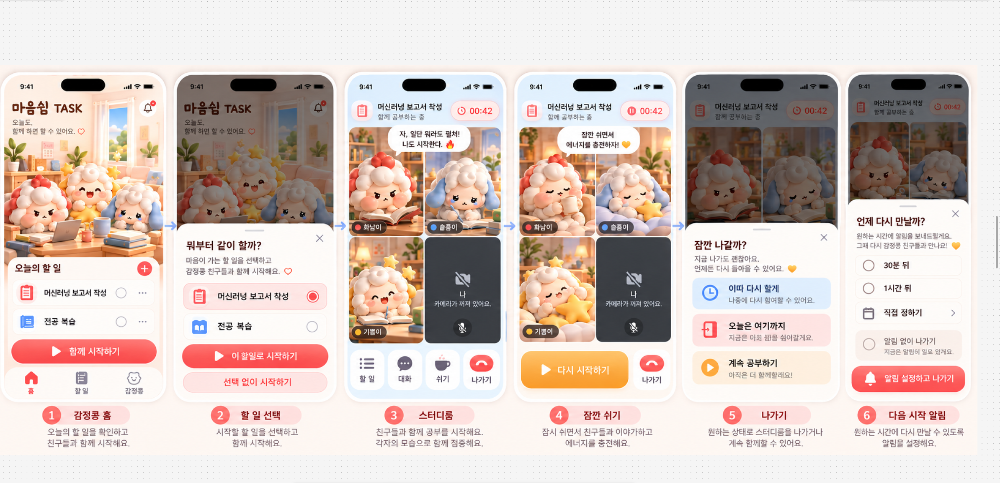

간지톤 22팀 · 함께 시작하는 공부
오늘도,
함께하면
할 수 있어요.
작은 할 일부터 시작하고, 세 친구와 대화하며 공부해 보세요. 쉬었다 돌아올 시간도 정할 수 있어요.
01할 일 확인
02함께 시작
03공부 · 휴식
04다시 만날 시간
제공된 화면 흐름 보기

작은 할 일부터 시작하고, 세 친구와 대화하며 공부해 보세요. 쉬었다 돌아올 시간도 정할 수 있어요.
